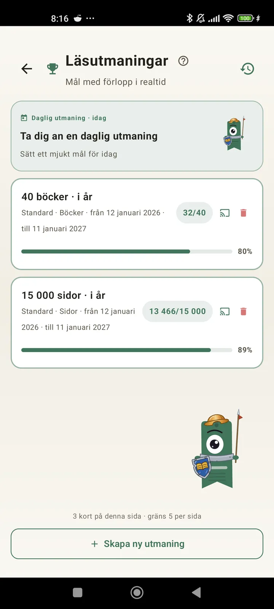

Lär känna dig själv som läsare
Utmaningar, bingon, widgets och fler funktioner som ger dig mer av din läsning. Nytt i 3.7: widgets för utmaningar och bingo.

Läsutmaningar
Sätt mål för sidor, sviter eller genrer. Upp till 15 aktiva utmaningar gratis, obegränsat med Pro. Dessutom en anpassningsbar dagsutmaning som inte räknas mot gränsen.

Dagsutmaning
Ett nytt mål varje dag. Klara utmaningen före midnatt för att behålla din svit.

Läsbingo
Två nya bingon varje månad med temarutor. Fyll rader, kolumner eller hela kortet.

Veckosammanfattning
Varje måndag en ögonblicksbild av din vecka: lästa sidor, total tid, svit och hur det går jämfört med veckan innan.

Månadssammanfattning
När en månad är slut summerar Lecturameter den: sidor, tid, avslutade böcker, din takt dag för dag och månadens bok.

Bingo-widget Pro
Månadens bingokort, alltid synligt, med de rutor du har klarat och de rader du har fått.

Bok-widget Gratis
Se boken du läser direkt på hemskärmen: omslag, titel, författare, sidor och framsteg i procent, alltid uppdaterat. Kan ändras i storlek så att den passar var du vill.
Seriöst, appen känns som terapi, jag har gått från att läsa ett par sidor om dagen till ungefär 20 sidor om dagen, och det blir bara bättreSynpunkt från en användare, skickad med e-post

Månadsjämförelse Pro
En snabb titt på dina senaste månader utan att öppna appen. Staplar för varje månads sidor med den aktuella markerad, så att du ser direkt om det går bättre eller sämre den här månaden än förra.

Utmaningswidget Pro
Dina aktiva utmaningar och deras framsteg på hemskärmen. Välj vilka som ska visas från skärmen Utmaningar.